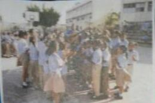

Volver A Hipervinculos
Yo sólo quiero mirar los campos: yo sólo quiero
cantar tu canto; pero no quiero cantar solito,
yo quiero un coro de pajaritos. Quiero llevar
este canto amigo, a quien lo pudiera necesitar.
Yo sólo quiero un viento fuerte, llevar mi barco
con rumbo norte, y en el trayecto voy a pescar
para dividir luego al arribar. Quiero llevar....
Yo quiero amor siempre en esta vida,
sentir calor de una mano amiga.
Quiero a mi hermano sonrisa al viento,
verlo llorar, pero de contento. Quiero llevar....